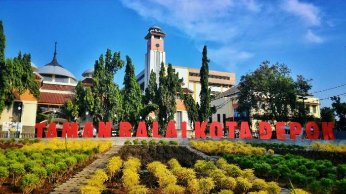
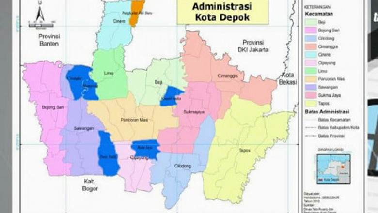
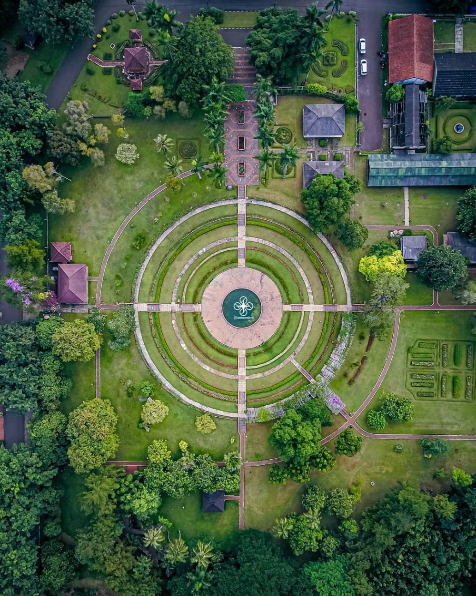
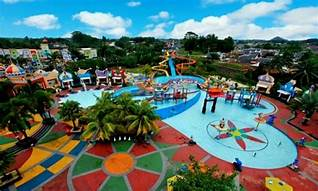

Sejarah

Depok berawal dari sebuah Kecamatan yang berada di lingkungan Kewedanaan (Pembantu Bupati) wilayah Parung Kabupaten Bogor
Pada tahun 1981 Pemerintah membentuk Kota Administratif Depok berdasarkan Peraturan Pemerintah Nomor 43 tahun 1981 yang peresmiannya pada tanggal 18 Maret 1982 oleh Menteri dalam Negeri (H. Amir Machmud).
Kecamatan

Selama kurun waktu 17 tahun Kota Administratif Depok berkembang pesat baik dibidang Pemerintahan, Pembangunan dan Kemasyarakatan. Khususnya bidang Pemerintahan semua Desa berganti menjadi Kelurahan dan adanya pemekaran Kelurahan , sehingga pada akhirnya Depok terdiri dari 6 (Kecamatan) dan 63 (enam puluh tiga) Kelurahan,
Peningkatan yang cukup cepat, mengingat pada awal diresmikan kota Depok baru ada 3 kecamatan dan 17 desa.
Tempat Wisata
Depok cocok jadi alternatif liburan saat akhir pekan, terutama bagi warga Jakarta. Terdapat beragam pilihan wisata, mulai dari bernuansa alam, edukasi, hingga taman-taman unik.
Wiladatika

Taman dengan pesona yang indah, cocok untuk tempat berkreasi dengan keluarga, sanak dan saudara. Taman yang satu ini lebih dikenal dengan Taman Bunga Cibubur. Di kawasan taman ini anda akan menemukan Pusdiklatnas atau Pusat Pendidikan dan Pelatihan Pramuka Nasional. Selain itu, anda juga akan menjumpai gedung olahraga dan pertemuan. Adapun fasilitas yang disediakan di antaranya adalah kolam renang outbound, saung taman, outbound bahkan tempat penginapan.
Taman Herbal Insani

Berada di daerah Keluarahan Pengasinan. Merupakan tempat wisata yang cukup lengkap. terdapat taman , kolam renang, area memanah, saung keluarga.